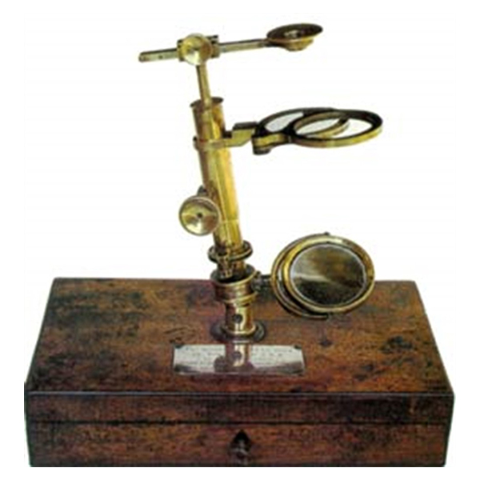

Canlılığın Temel Birimi Hücre
Hücre; canlıların temel yapısal ve işlevsel birimidir. Hücrenin keşfi mikroskobun icadı ile mümkün olmuştur. Biyolojinin en önemli gözlem ve ölçme araçlarından olan mikroskoplar, gözün görme sınırları ötesinde bulunan küçük cisimlerin optik veya manyetik bir seri mercek sistemi yardımıyla büyütülerek incelenmesini sağlar.


Mikroskobun Tarihsel Gelişimi
Leeuwenhoek'un Mikroskobu (~1600)
Elde Taşınır mikroskop (~1700)
İngiliz Mikroskobu (1865)
Diseksiyon Mikroskobu (1927)
Işık mikroskobu (2010)
Page 3
Page 4
Page 5
Page 6